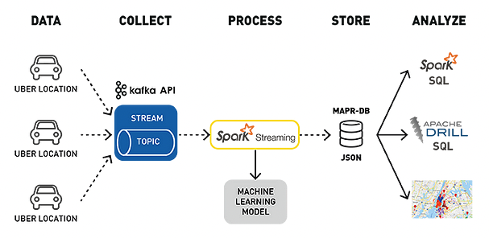

为什么Kafka这么快¶
Apache Kafka是一个开源的分布式事件流处理平台，主要用于高性能数据管道、流式分析、数据集成和关键任务应用。
对于数据流来说，速度是极其重要的。无论是跟踪网站用户活动、处理金融交易还是监控物联网设备，都需要一个能处理连续数据流且延迟最小的系统。
Kafka正是为此类需求而设计的，它为什么可以这么快？
1、分布式架构¶
Kafka不是单机服务器，而是多节点集群。分布式架构允许Kafka进行水平扩展，也就是说，可以动态添加机器，来处理不断增长的数据。分布式架构的每个节点，都能独立的处理数据，这给Kafka带来了并发能力。节点越多，并发能力越强，从而显著提高吞吐量和性能。
Kafka的处理过程如下图所示：

多节点并发，实时处理海量数据，这是Kafka高速度的关键原因之一。
2、分区¶
分区是Kafka的核心概念之一，将数据分割成多个分区，每个分区被分配给特定的集群节点。
Kafka确保每个分区只能被一个消费者独立处理，从而允许多个消费者同时从同一主题的不同分区读取数据，实现了并行处理，提高吞吐量。
补充说明：单个分区内是顺序处理的，能保证顺序性。多个分区之间是并行的，由不同的消费者并行处理。
3、读写优化¶
在写方面，Kafka采用了追加写入存储技术，新消息被追加到分区末尾。也就是说，写入是顺序的，而不是随机插入的，顺序写入比随机插入速度更快。
在读方面，Kafka结合了内存存储和磁盘存储，将频繁访问的数据保存在内存中，减少了对磁盘的读取，提高了读取性能。内存访问速度远快于磁盘访问。
4、零拷贝技术¶
在传统系统中，数据在用户空间和内核空间之间，通常需要多次拷贝，例如，当一个应用程序从磁盘读取数据并发送到网络时，数据可能会经历以下步骤：
从磁盘读取到内核空间的缓冲区。
从内核空间拷贝到用户空间的缓冲区。
从用户空间拷贝回内核空间的网络缓冲区。
最后通过网络发送出去。
这种多次拷贝会带来显著的CPU开销和延迟。
在Kafka中，零拷贝技术允许数据直接从文件系统缓存传输到网络缓冲区，而无需在用户空间和内核空间之间进行多次拷贝。
5、批量发送和压缩¶
在Kafka中，生产者可以将多个消息组合成一个批次，在一次网络请求中发送多个消息，减少网络往返次数，减少每条消息单独发送所带来的开销。
同时，Kafka引入了压缩算法，生产者在发送消息之前对其进行压缩，消费者在接收消息时再进行解压缩。压缩算法减少了数据传输和存储的大小，从而优化性能。